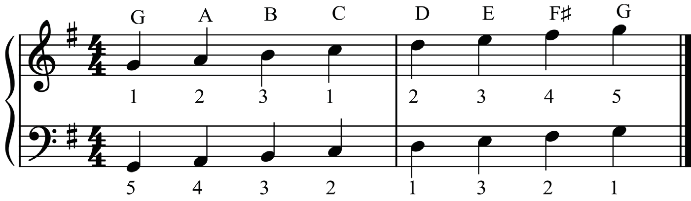
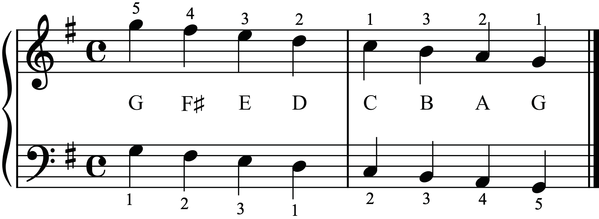
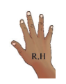
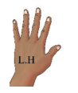

R.H

L.H
Activity 6.24
The following figure shows the G major scale on the grand staff in the descending order. Observe the figure and play the scale on your piano using both hands.


R.H

L.H
Activity 6.25
Play the G major scale on your piano in the ascending and descending order using both hands.
Activity 6.26
The following figures show a contrary motion of the G major scale on the grand staff and piano keyboard. Observe the figures and play the scale on your piano using both hands.